These functions visualize Joint-RPCA results stored in a
SingleCellExperiment or MultiAssayExperiment.
plotJointRPCA() creates a two-dimensional ordination plot
of the samples.
plotJointRPCACovariance() creates a heatmap of the
feature-feature covariance (or correlation), split into blocks by data
layer.
plotJointRPCAExplainedVariance() creates a heatmap showing
how the variance of each data layer, or of each feature, is divided
across the components.
plotJointRPCANetwork() creates a network where nodes are
features and edges connect features with strong covariance (or
correlation).
plotJointRPCALoadings() shows the joint feature loadings of
each component separately for each data layer.
plotJointRPCA(x, ...)
plotJointRPCACovariance(x, ...)
plotJointRPCAExplainedVariance(x, ...)
plotJointRPCANetwork(x, ...)
plotJointRPCALoadings(x, ...)
# S4 method for class 'MultiAssayExperiment'
plotJointRPCA(x, dimred, ...)
# S4 method for class 'SingleCellExperiment'
plotJointRPCA(x, dimred, ...)
# S4 method for class 'MultiAssayExperiment'
plotJointRPCACovariance(x, dimred, ntop = 20, correlation = FALSE, ...)
# S4 method for class 'SingleCellExperiment'
plotJointRPCACovariance(x, dimred, ntop = 20, correlation = FALSE, ...)
# S4 method for class 'MultiAssayExperiment'
plotJointRPCAExplainedVariance(
x,
dimred,
by = c("layer", "feature"),
ntop = 20,
add.total = FALSE,
...
)
# S4 method for class 'SingleCellExperiment'
plotJointRPCAExplainedVariance(
x,
dimred,
by = c("layer", "feature"),
ntop = 20,
add.total = FALSE,
...
)
# S4 method for class 'MultiAssayExperiment'
plotJointRPCANetwork(
x,
dimred,
ntop = 10,
correlation = TRUE,
threshold = 0.9,
...
)
# S4 method for class 'SingleCellExperiment'
plotJointRPCANetwork(
x,
dimred,
ntop = 10,
correlation = TRUE,
threshold = 0.9,
...
)
# S4 method for class 'MultiAssayExperiment'
plotJointRPCALoadings(
x,
dimred,
layout = "lollipop",
ncomponents = NULL,
n = 10,
...
)
# S4 method for class 'SingleCellExperiment'
plotJointRPCALoadings(
x,
dimred,
layout = "lollipop",
ncomponents = NULL,
n = 10,
...
)A
SummarizedExperiment
or
MultiAssayExperiment
object containing Joint-RPCA results.
Additional arguments.
plotJointRPCA: passed to
plotOrdination.
plotJointRPCANetwork: layout
(character(1); graph layout, see ggraph;
default "fr") and show.label (logical(1); whether
to label nodes with feature names; default FALSE).
plotJointRPCALoadings: passed to
plotLoadings, for example
absolute.scale, show.color and show.sign.
plotJointRPCACovariance and
plotJointRPCAExplainedVariance: currently not used.
character(1): Specifies the name of the Joint-RPCA
result to plot.
integer(1) or NULL. Number of features shown from
each data layer. The features with the largest variance are retained. Set
to NULL to show all features. In plotJointRPCAExplainedVariance
used only when by = "feature".
(Default: 20 for plotJointRPCACovariance and
plotJointRPCAExplainedVariance, 10 for
plotJointRPCANetwork)
logical(1). Should correlations be shown instead
of covariances? (Default: FALSE for plotJointRPCACovariance,
TRUE for plotJointRPCANetwork)
character(1). Whether to show variance by data layer
("layer") or by feature ("feature").
(Default: "layer")
logical(1). Should the total variance of each layer
be shown as a barplot? Used only when by = "layer".
(Default: FALSE)
numeric(1). Network edges with absolute value below
the threshold are dropped. (Default: 0.9)
character(1). Layout of the loading plot, either
"lollipop" or "barplot". (Default: "lollipop")
integer(1) or NULL. Number of components
to show. NULL shows all components. (Default: NULL)
integer(1). Number of features shown for each component
and layer. (Default: 10)
A ggplot2 object. plotJointRPCALoadings(), and
plotJointRPCAExplainedVariance() with add.total = TRUE,
return a patchwork object.
plotJointRPCA() is a wrapper around
plotOrdination for Joint-RPCA results.
Consequently, most graphical parameters are passed directly to
plotOrdination(), including options for colouring, grouping,
faceting and adding ellipses. See
plotOrdination for a complete description of
these arguments.
The feature covariance follows the gemelli implementation of Joint-RPCA:
$$\Sigma = V \textrm{diag}(s)^2 V^T,$$
where \(V\) are the joint feature loadings
(attr(res, "rotation")) and \(s\) the singular values
(attr(res, "varExplained")). The full matrix has one row and column
per feature and can be very large. Therefore, it is calculated only for the
ntop features with the largest variance (the diagonal of the
covariance matrix) from each layer. Features are ordered by hierarchical
clustering. The covariance is estimated from a low-rank representation.
With a small number of components, correlations are often close to -1 or 1,
and they reflect how features align in the Joint-RPCA space rather than
correlations in the observed data. The network uses the same covariance.
Edges connect features whose absolute covariance (or correlation) is at
least threshold, and they are coloured by the covariance (or
correlation). Nodes are shaped by data layer.
In plotJointRPCAExplainedVariance(), the variance of feature
\(i\) on component \(j\) is \(s_j^2 V_{ij}^2\). For a layer, the
values are summed over its features. Each row (layer or feature) is scaled
to sum to one. The values describe the low-rank Joint-RPCA model, not the
proportion of variance explained in the observed data. With
add.total = TRUE, a barplot of the total variance of each layer is
added next to the heatmap. The total of a
layer is its share of the total variance of the Joint-RPCA model,
\(\sum_{i \in layer} \sum_j s_j^2 V_{ij}^2 / \sum_j s_j^2\), so the
totals sum to one over the layers. Note that the total is a sum over the
features of a layer, so it depends on the number of features and their
scale: a layer with many features tends to have a large share even if its
individual features are only weakly associated with the components. The
heatmap is
scaled within each layer, so it is not affected by the number of features.
In plotJointRPCALoadings(), the joint feature loadings
(attr(res, "rotation")) are split by data layer. As the sample scores
are shared, the loadings show which features from each layer drive each
shared component. The n features with the largest absolute loading
are shown for each component and layer. The plot of each layer is created
with plotLoadings, and the layers are stacked
into rows.
data("HintikkaXOData")
mae <- HintikkaXOData
mae[[1]] <- transformAssay(
mae[[1]],
assay.type = "counts",
method = "rclr",
impute = FALSE
)
mae[[2]] <- transformAssay(
mae[[2]],
assay.type = "nmr",
method = "log10"
)
mae <- addJointRPCA(
mae,
experiments = c(1, 2),
assay.types = c("rclr", "log10")
)
#> Warning: 'experiments' dropped; see 'drops()'
#> harmonizing input:
#> removing 40 sampleMap rows not in names(experiments)
# Basic Joint-RPCA plot
plotJointRPCA(mae, "JointRPCA")
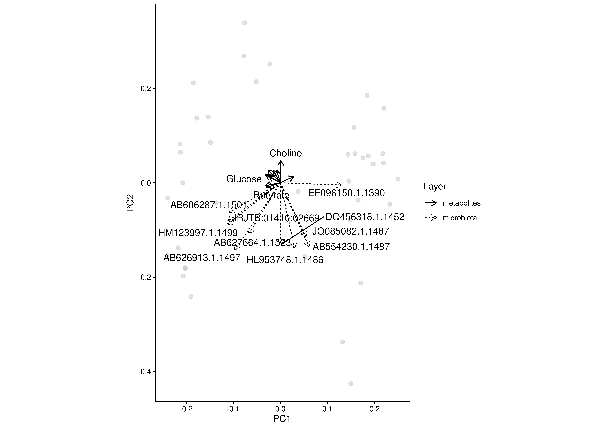
# Colour samples by metadata
plotJointRPCA(mae, "JointRPCA", colour.by = "Fat")
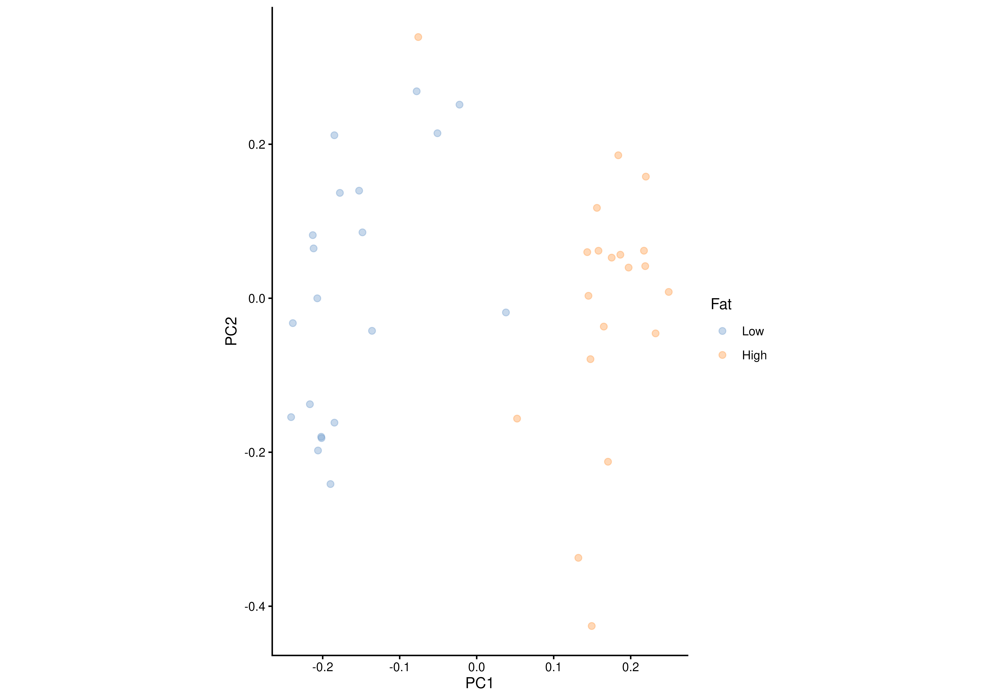
# Add confidence ellipses
plotJointRPCA(
mae,
"JointRPCA",
colour.by = "Fat",
add.ellipse = TRUE
)
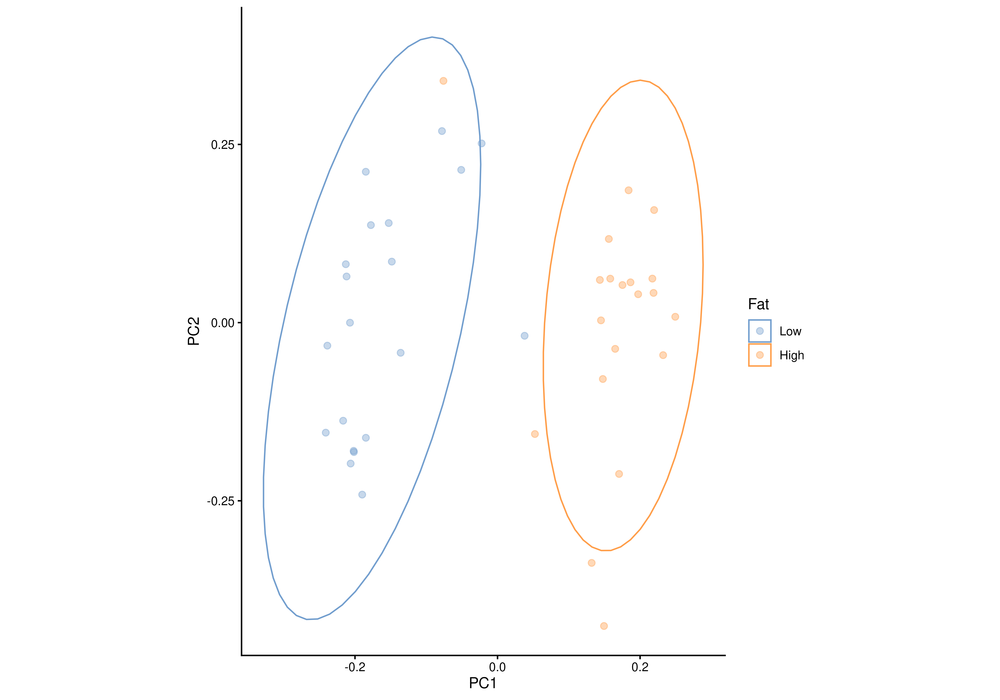
# Covariance of the top 20 features from each layer
plotJointRPCACovariance(mae, "JointRPCA")
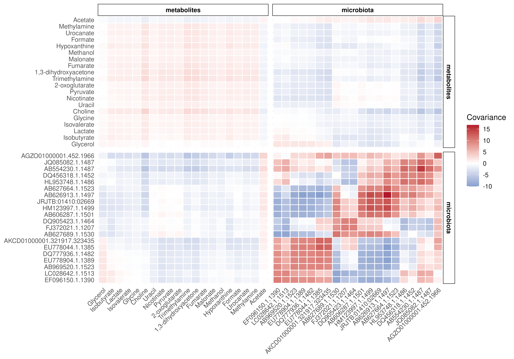
# Correlation of the top 10 features from each layer
plotJointRPCACovariance(mae, "JointRPCA", ntop = 10, correlation = TRUE)
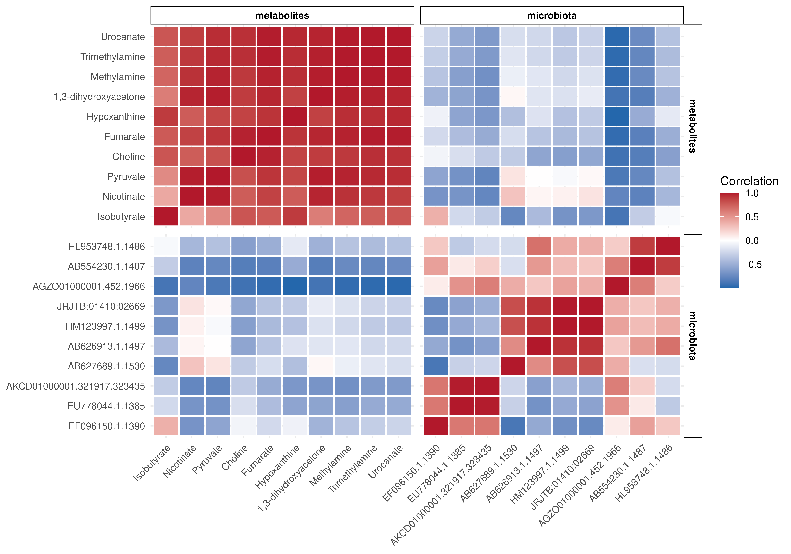
# Variance explained by each component in each layer
plotJointRPCAExplainedVariance(mae, "JointRPCA")
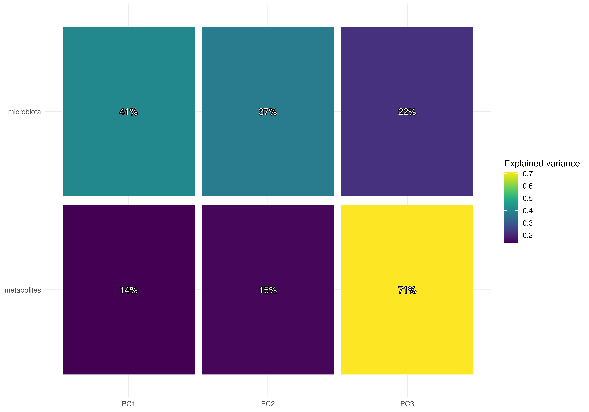
# Add the total variance of each layer
plotJointRPCAExplainedVariance(mae, "JointRPCA", add.total = TRUE)
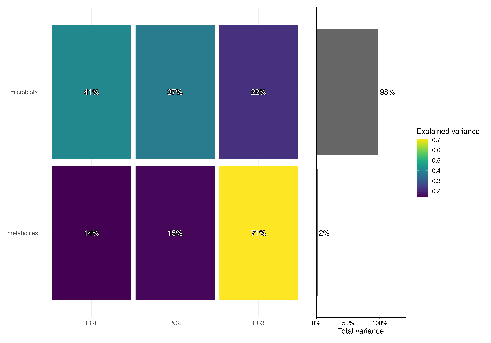
# Variance explained by each component in each feature
plotJointRPCAExplainedVariance(mae, "JointRPCA", by = "feature")
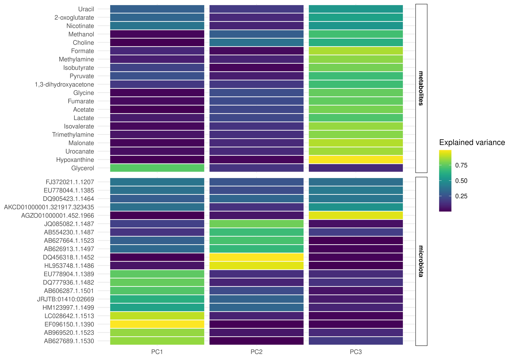
# Network of the top 10 features from each layer
plotJointRPCANetwork(mae, "JointRPCA")
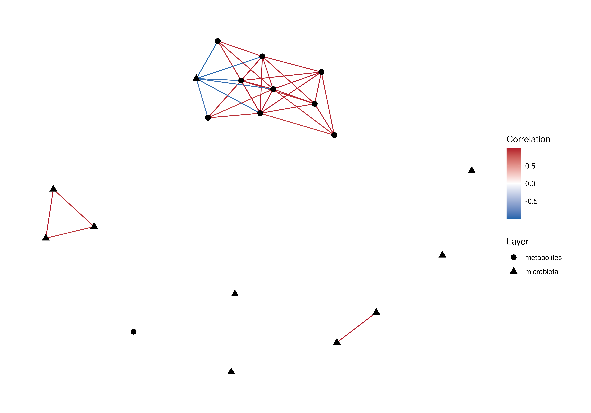
# Stricter threshold and node labels
plotJointRPCANetwork(mae, "JointRPCA", threshold = 0.97, show.label = TRUE)
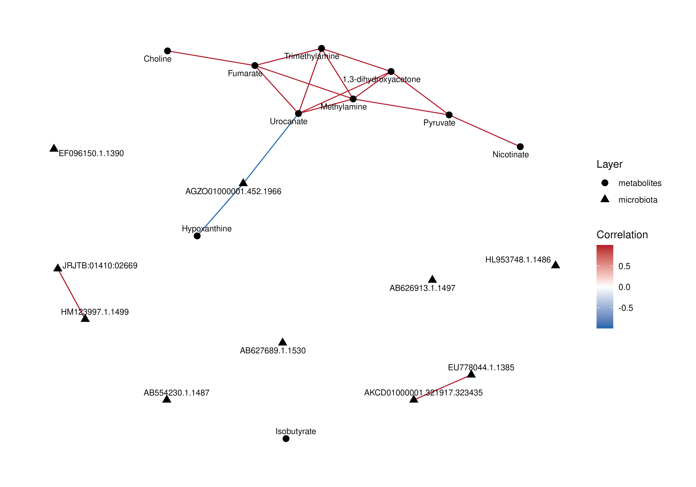
# Loadings of the shared components in each layer
plotJointRPCALoadings(mae, "JointRPCA")
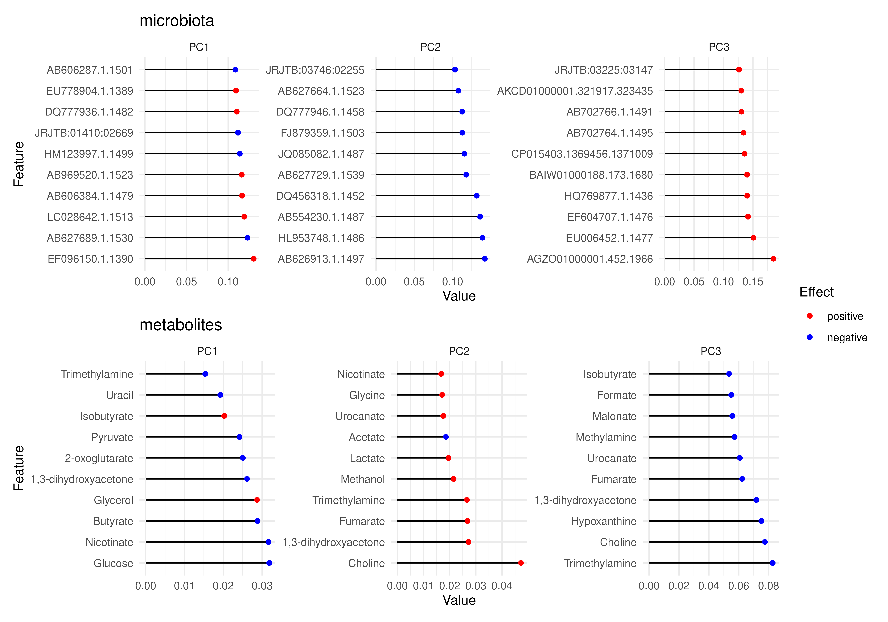
# Barplot of the top 5 features, signed loadings
plotJointRPCALoadings(
mae, "JointRPCA", layout = "barplot", n = 5, absolute.scale = FALSE)
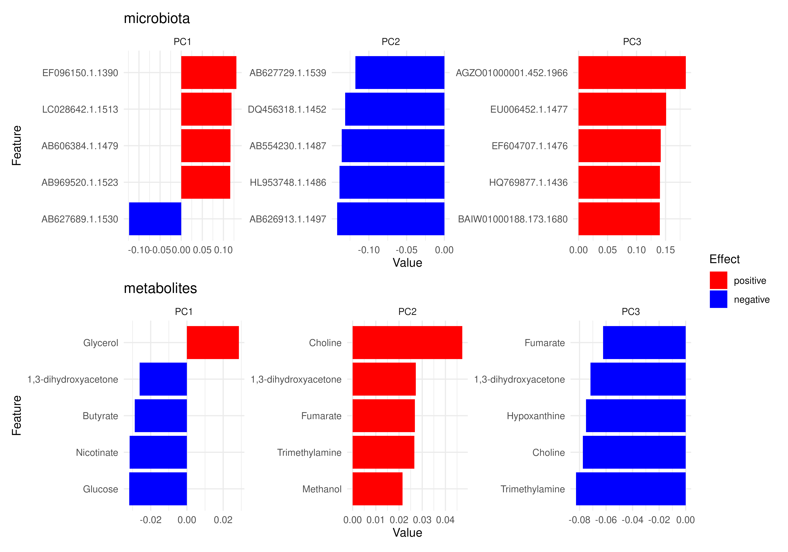